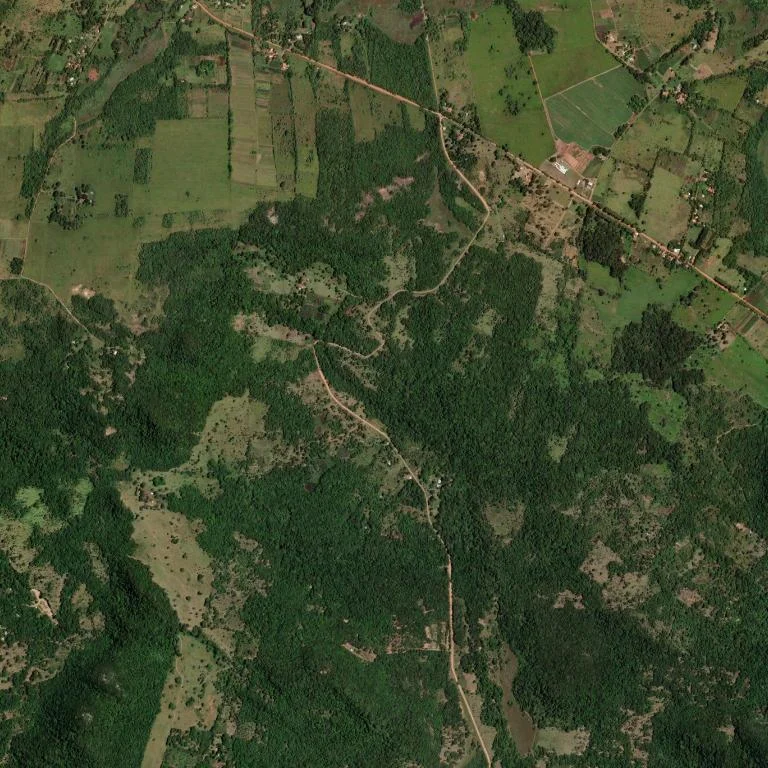
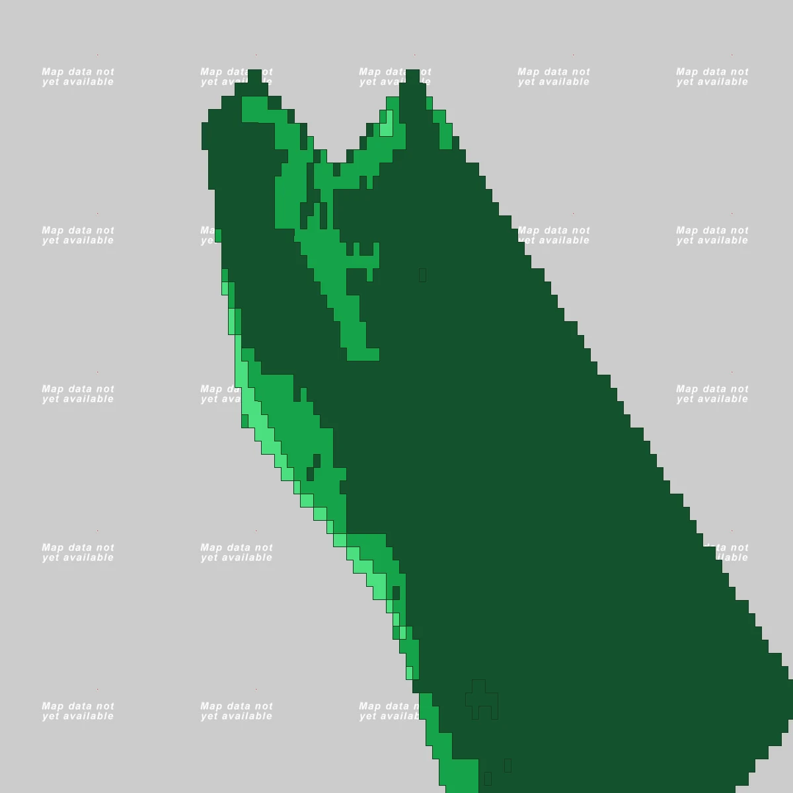
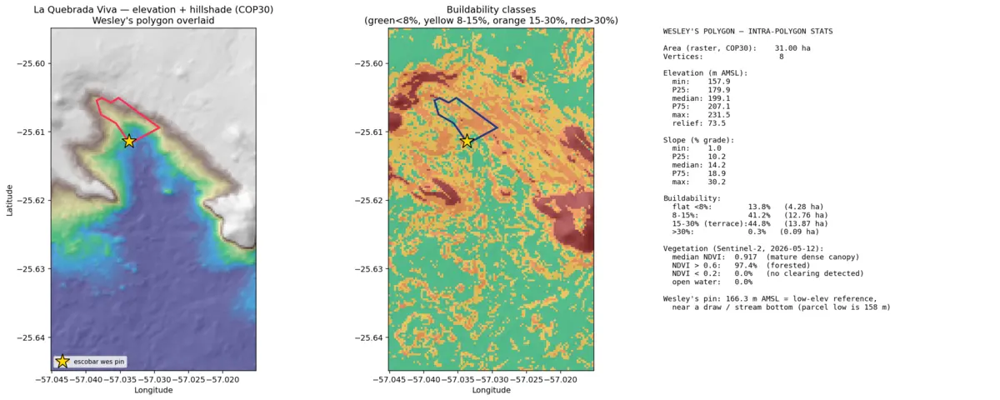
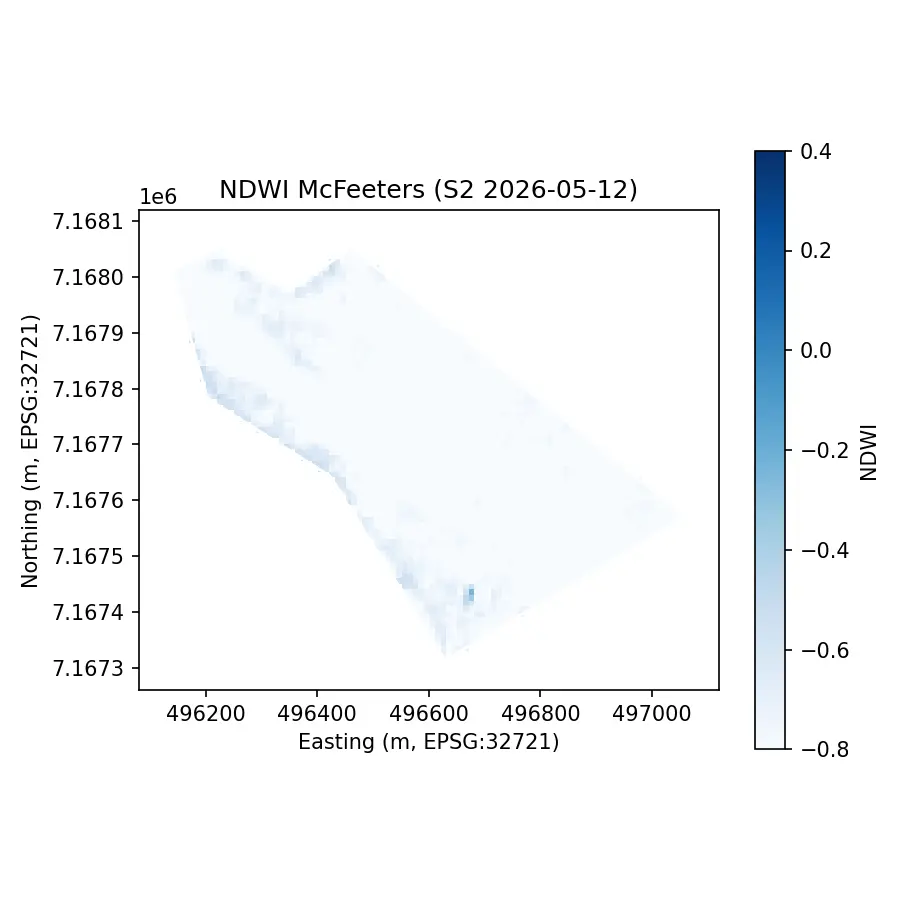
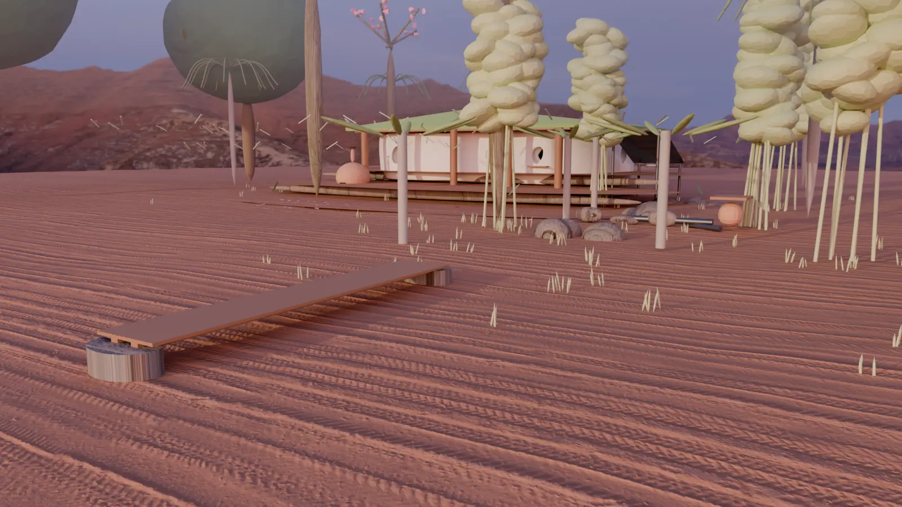
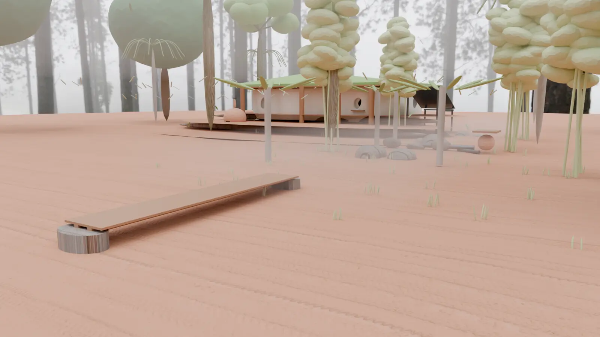
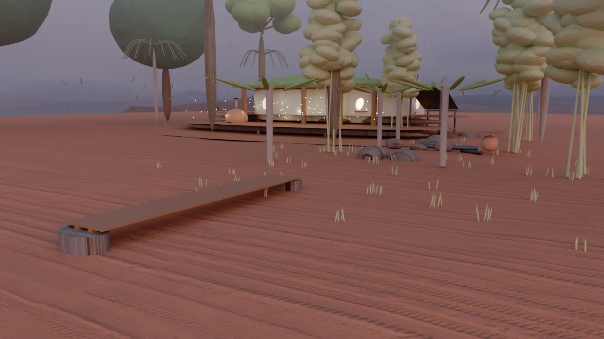

1,776mm
Annual rainfall
Year-round — no dry season strong enough to stop the quebrada.
62 hectares · Paraguarí, Paraguay · For sale by owner
A buildable Atlantic-Forest parcel — 79% level-enough to build, with a year-round quebrada, a GPS-confirmed waterfall, and the kind of mature canopy that takes a century to grow back.
The Land
Sixty-two hectares of mature Atlantic-Forest interior in the Paraguarí department, two hours west of Asunción. The land drops 142 meters from ridge to quebrada — which is why you can build a cabin with a view and a stream at the bottom of the property, not a thousand meters away.

3D exploration
The viewer below uses the same 30m-resolution terrain data that professional surveyors rely on. Fly to the waterfall, orbit the ridge, or measure the slope of a potential cabin site.
Cesium World Terrain · Esri satellite · 30m SRTM-class elevation
The Water
Paraguay's eastern hills carry the rain down to the Río Paraguay through a network of small quebradas. This property sits on one — the quebrada runs east-to-west through the southern half, with a GPS-confirmed waterfall dropping from a 274m rim on the north side.
The Forest
This is mature Atlantic-Forest interior — not regrowth, not plantation. Mean canopy height is 3.5m, with emergent specimens reaching 24.5m (think lapacho, cedro, guatambú). Sentinel-2 satellite observations show the canopy stays green through the 2022 La Niña drought — proof the forest is drought-resilient, not just rain-fed.

Sentinel-2 NDVI binned into sparse, open, medium, and dense — covering 61 sub-polygons at 10m native resolution. Most of the parcel sits in the medium and dense bins.

A visible-light Sentinel-2 composite. This is what the parcel looks like from space on a clear day in May 2025 — Atlantic-Forest greens with no signs of recent clearing or pasture.

The Normalized Difference Water Index shows the quebrada is too narrow to be detected from 10m satellite imagery. That's actually a feature, not a bug — it means the water table feeds the quebrada through subsurface flow, leaving the surface usable.
Why this matters for buyers: The dense canopy is what makes the quebrada permanent. It's also the single biggest reason the parcel hasn't been logged — a logger would have to fell and process a thousand mature trees to clear an acre, and there's no road in. That barrier is permanent.
The Build
We've commissioned architectural renderings of the first cob-bottle house on the property in three HDRI lighting conditions. The renders use the actual topography and atmospheric data of the parcel, not stock imagery.

Direct upper-left sun, clear sky. Best for showing massing, shadow, and the relationship between house and forest edge.

Low warm sun with morning mist from the quebrada. This is the view most buyers will remember — a cob wall with sunlight coming through the lapachos.

Cool morning fog rolling in from the quebrada. This is what a guest would see walking to breakfast in winter — the property's signature atmosphere.
Why three lights: The same house in the same place
looks completely different across the day. Most "stock" property
renderings show only one lighting condition, which misrepresents
the experience. The renders are byte-frozen at 85e86aa
— meaning what you see here is exactly what was generated.
The Layers
Below is the same viewer the project's technical team uses to plan cabin placement. The data behind every layer is downloadable — click any link to get the GeoJSON. Need the broader context (roads, water, towns, land use, forest)? Use the unified interactive map with the radius picker (Parcel / 5 / 10 / 20 / 30 km).
Honest limits
Pre-sales data is good for a first look, not for a final design. Here's what needs a real person on the property.
The canopy is shown in four density zones from satellite NDVI. Crown-level positions need Wes's phone captures processed through the COLMAP + gsplat pipeline. That work is in progress.
Padrones and Anexo I from Wesley's escritura need to be overlaid on the property map to verify the legal boundary. The escritura itself (62 ha) is slightly different from the GPS-walked polygon (71.7 ha) — a surveyor should reconcile.
The NASA FIRMS API requires a free key to overlay the last 5 years of fire detections. The env-setup script prompts for it. Without it, fire risk is based on vegetation dryness only.
30 cm/pixel imagery from Vantor tasking runs >$2,800 per 100 km² — over-budget for a pre-sales page. Available as a post-deal add-on for serious buyers.
The DEM-derived quebrada segments are real but disconnected — D8 flow-accumulation produces a tree of tributaries rather than a single continuous main channel. A hydrogeologist can verify connectivity on site.
Only 2 OSM-mapped buildings sit inside the property. The other 14 structures within 500m are scattered rural farms and sheds. A property survey will identify any unrecorded improvements.
Next step
A pre-sales page can only take you so far. The 30.9 ha buildable cluster is a 2-hour drive from Asunción, and a flight from Buenos Aires or São Paulo. We're happy to host a site visit — typically a half-day that includes the waterfall, the quebrada, and a conversation about what's possible.